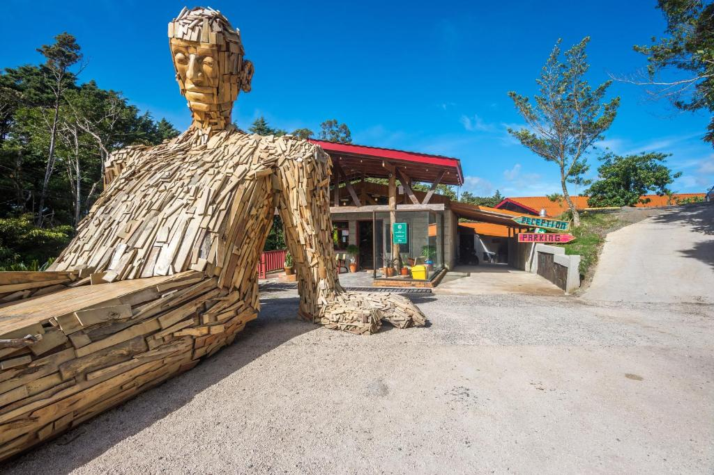
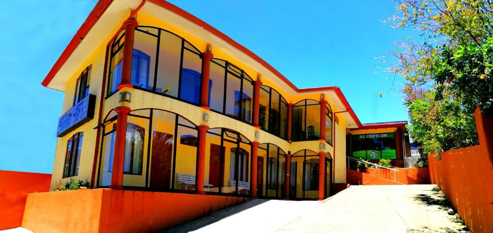

Monte Verde
Monteverde is a city in the mountainous northwest of Costa Rica. It is recognized for its biodiverse forests in the clouds. This famous Cloud Forest Reserve is home to an infinite number of species of fauna and on the trails you can see ferns and orchids, and there are suspension bridges at high altitudes.
-
Hotel Heliconia
Hotel Heliconia is located in Monteverde Costa Rica, and features a hot tub, an extensive garden, 2 restaurants, a spa centre, massages services and free Wi-Fi.
Click to see more -
 Hotel La Guayaba
Hotel La Guayaba
Located in Monteverde Costa Rica, La Guayaba Monteverde features a garden. The property is around 2.4 km from Sky Adventures Monteverde, 3.7 km from Selvatura Adventure Park and an 11-minute walk from Monteverde Ecological Sanctuary. Free WiFi is available and Monteverde Cloud Forest Biological Reserve is 3.6 km away.
Click to see more -
 Hotel La Macadamia
Hotel La Macadamia
Located 4.8 km from Sky Adventures Monteverde, La Macadamia - Monteverde provides accommodation with a garden, barbecue facilities and room service for your convenience. Free WiFi is available throughout the property.
Click to see more -
Majestic Lodge Luxury
Located in El Castillo de la Fortuna, Majestic Lodge Luxury and Spacious Home with Private Pool and Jacuzzi is a holiday home boasting a year-round outdoor pool. The air-conditioned unit is 13 km from Fortuna.
Click to see more -

Selina Monteverde
Set in Monteverde Costa Rica, 7.3 km from Sky Adventures Monteverde, Selina Monteverde offers accommodation with a garden, free private parking, a restaurant and a bar. This 3-star hotel offers free WiFi. The hotel features family rooms.
Click to see more -

Santa Fe
Hotel Santa Fe - Costa Rica is situated in Monteverde, Costa Rica, 2.6 km from Sky Adventures Monteverde and 3.7 km from Selvatura Adventure Park. Free private parking is available on site.
Click to see more -
Senda Monteverde Hotel
Featuring a garden and a bar, Senda Monteverde Hotel by Cayuga Collection is set in Monteverde Costa Rica, 4 km from Sky Adventures Monteverde and 6 km from Selvatura Adventure Park. Among the facilities of this property are a restaurant, a 24-hour front desk and room service, along with free WiFi. The accommodation offers entertainment staff and a concierge service.
Click to see more -
 Trapp Family Lodge
Trapp Family Lodge
Located in Monteverde Costa Rica, featuring a restaurant and gardens with a terrace, Trapp Family Lodge also offers complimentary Wi-Fi access throughout and public parking on site. The property is located amid the tropical forest of Monteverde Reserve.
Click to see more